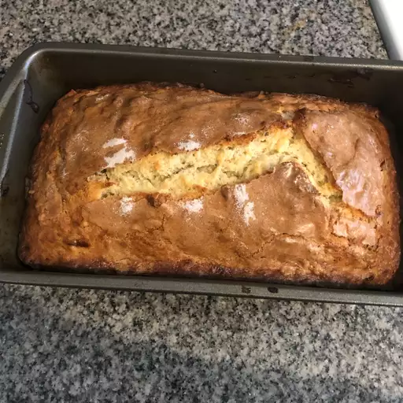

Sour Cream Banana Bread Recipe

Descriptions
This bread is a family favorite. It is very moist, freezes well,
and makes a great addition to school lunches with peanut butter spread on a slice.
Ingredients
- 4 very ripe bananas, divided
- 1 cup white sugar
- 3/4 cup butter, melted and cooled
- 2 large eggs
- 1/3 cup sour cream
- 1 teaspoon vanilla extract
- 2 cups all-purpose flour
- 1 1/2 teaspoons baking powder
- 1/2 teaspoon salt
- 1/2 cup chopped walnuts (Optional)
- 2 teaspoons white sugar
- 1/2 teaspoon ground cinnamon
Steps
- Preheat oven to 350 degrees F (175 degrees C). Grease a 5x9-inch loaf pan.
- Mash 2 bananas in a bowl with a fork. Place remaining 2 bananas in a separate bowl with 1 cup sugar and beat the bananas and sugar with an electric mixer until creamed and fluffy, 3 minutes.
Beat in melted butter, eggs, sour cream, and vanilla extract until thoroughly combined.
- Whisk flour, baking powder, and salt together in a bowl and stir the flour mixture into banana-sugar mixture. Fold in mashed bananas and walnuts.
Pour batter into prepared loaf pan and tap the pan on the counter several times to remove any air pockets. Stir 2 teaspoons sugar with cinnamon in a small bowl and sprinkle the cinnamon sugar over the top of the loaf.
- Bake in the preheated oven until bread is golden brown on top and set in the center, 1 hour and 15 minutes; rotate bread pan in oven halfway through baking.
Cool in the pan for 10 minutes before removing to finish cooling on a wire rack.